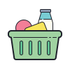

Desastres naturais não escolhem suas vítimas.
Todos nós podemos ser afetados, ajude-nos a oferecer suporte às pessoas que precisam.
Doar agoraMãos solidárias
Um pouco sobre as arrecadações
Em nosso compromisso constante com a empatia, arrecadamos uma variedade de itens essenciais que abrangem desde alimentos e roupas até medicamentos e materiais de construção. Cada doação recebida é uma expressão de solidariedade, e é através dessas contribuições generosas que construímos pontes para um futuro mais compassivo.

Alimentos
+2000
Roupas
+6000
Medicamentos
+3697
Construções
+895